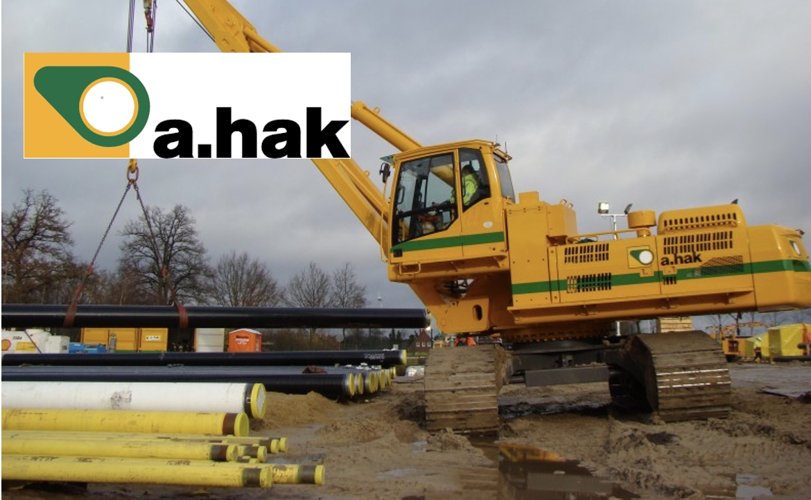
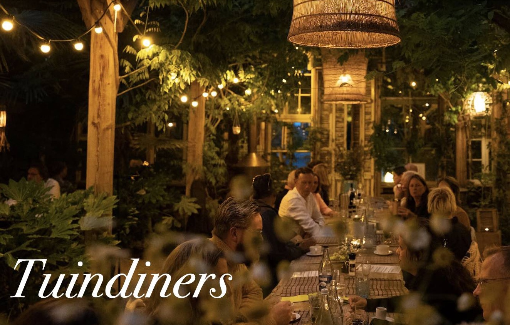
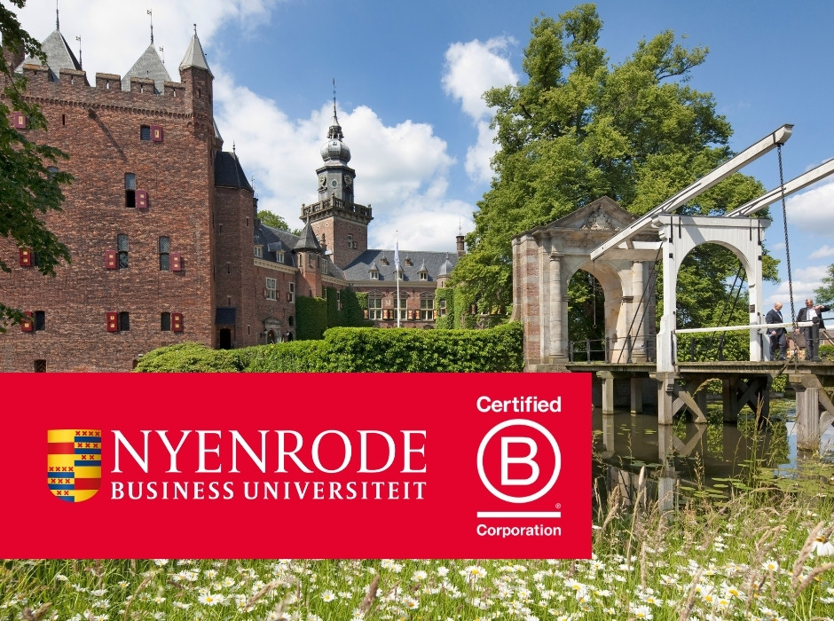

Operations & procesverbetering
Processen analyseren, knelpunten zichtbaar maken en versimpelen waar mogelijk. Van structuur naar meetbare verbetering.
Ik ontwikkel mij in het oplossen van praktische problemen en het slimmer maken van processen.
Neem contact op!Processen analyseren, knelpunten zichtbaar maken en versimpelen waar mogelijk. Van structuur naar meetbare verbetering.
Beslissingen onderbouwen met data. Inzicht in risico, rendement en performance als basis voor betere keuzes.
Ownership nemen, kansen signaleren en ideeën omzetten in actie. Praktisch denken met resultaatgerichtheid.

Ondersteunde het Technology Risk team bij technische controls en schreef een scriptie over het verbeteren van het onboardingproces van de afdeling (Landelijk)

Maakte de FTE-inzet binnen Capex-projecten volledig inzichtelijk. Ontwikkelde en verfijnde een Excel/VBA-tool die het planningsproces duidelijker en efficiënter maakte.
Planningen afstemmen, knelpunten bespreken en informatie verduidelijken. Ik was de schakel tussen het kantoor en de ploegen buiten
Procesoptimalisatie, gastenervaring en operationele performance.

Bachelor Engineering: Technische bedrijfskunde. Het combineren van techniek, operations en management om complexe bedrijfsprocessen te verbeteren.
Pre-Masterprogramma en Master of Science (MSc) in Management
Wil je meer weten, sparren of gewoon even kennismaken? Kies het kanaal dat het beste bij je past.